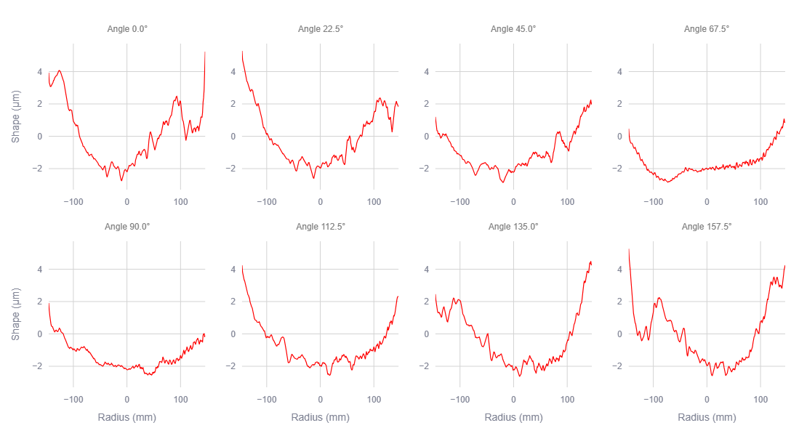

An interactive Streamlit web application for 2D/3D wafer thickness, shape, and removal-profile visualization.
The application takes .sbw files uploaded by the user and visualizes the thickness and flatness of a silicon wafer by creating interactive 2D and 3D plots.

KOBELCO SBW-330 scans the thickness and flatness of a silicon wafer in a linear fashion, and the applicaiton charts the line scans at each angle, allowing inspection and comparison of angular variations of thickness and shape profiles.